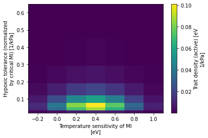

Examine changes in viable habitat
Examine changes in viable habitat¶
%load_ext autoreload
%autoreload 2
import os
import shutil
from itertools import product
import json
import yaml
import intake
import numpy as np
import xarray as xr
import matplotlib.pyplot as plt
import funnel
import data_collections as dc
import operators as ops
import util
import metabolic as mi
/glade/work/mclong/miniconda3/envs/metabolic/lib/python3.7/site-packages/dask_jobqueue/core.py:20: FutureWarning: tmpfile is deprecated and will be removed in a future release. Please use dask.utils.tmpfile instead.
from distributed.utils import tmpfile
curator = util.curator_local_assets()
cat = curator.open_catalog()
ds_ts = cat['trait-space'].to_dask().load()
trait_spc_wgt = ds_ts.trait_spc_wgt
trait_spc_wgt.plot();

dEodT_bar = mi.dEodT_bar
dEodT_bar
0.022
catalog_json_file = funnel.to_intake_esm(agg_member_id=True)
sub_spec = dict(
name='drift-corrected',
experiment=['20C', 'RCP85'],
member_id=dc.ocean_bgc_member_ids[1:],
)
catalog = funnel.to_intake_esm(agg_member_id=True).search(**sub_spec)
catalog
glade-cesm1-le catalog with 2 dataset(s) from 393 asset(s):
| unique | |
|---|---|
| experiment | 2 |
| component | 1 |
| stream | 1 |
| member_id | 31 |
| variable | 8 |
| name | 1 |
| path | 393 |
catalog.search(experiment='20C', variable=['pO2', 'TEMP'], member_id=10).df
| experiment | component | stream | member_id | variable | name | path | |
|---|---|---|---|---|---|---|---|
| 0 | 20C | ocn | pop.h | 10 | TEMP | drift-corrected | /glade/scratch/mclong/ocean-metabolism/funnel-... |
| 1 | 20C | ocn | pop.h | 10 | pO2 | drift-corrected | /glade/scratch/mclong/ocean-metabolism/funnel-... |
cache_dir = '/glade/scratch/mclong/ocean-metabolism/funnel-cache'
def _gen_cache_file_name(experiment, component, stream, member_id, variable):
return f'{cache_dir}/glade-cesm1-le.{experiment}.{component}.{stream}.{int(member_id):03d}.{variable}.drift-corrected.zarr'
def _make_cache(experiment, component, stream, member_id, variable):
"""
Manually generate funnel catalog entry
I.e.:
asset: /glade/scratch/mclong/ocean-metabolism/funnel-cache/glade-cesm1-le.20C.ocn.pop.h.101.TEMP.drift-corrected.zarr
esm_collection: data/catalogs/glade-cesm1-le.json
key: 20C.ocn.pop.h.101
name: drift-corrected
operator_kwargs:
- {}
- {}
- {}
operators:
- compute_time
- sel_time_slice
- compute_drift_correction
preprocess: _preprocess_pop_h_upper_1km
variable: TEMP
"""
cache_id_dict = dict(
asset=_gen_cache_file_name(experiment, component, stream, member_id, variable),
esm_collection='data/catalogs/glade-cesm1-le.json',
key=f'{experiment}.{component}.{stream}.{member_id}',
name='drift-corrected',
operator_kwargs=[{}, {}, {}],
operators=['compute_time', 'sel_time_slice', 'compute_drift_correction'],
preprocess='_preprocess_pop_h_upper_1km',
variable=variable,
)
cache_id_file = f'data/funnel-catalog/glade-cesm1-le.{experiment}.{component}.{stream}.{int(member_id):03d}.{variable}.drift-corrected.yml'
with open(cache_id_file, 'w') as fid:
yaml.dump(cache_id_dict, fid)
try:
cluster
client
except:
cluster, client = util.get_ClusterClient(memory='6GB')
cluster.scale(200)
client
/glade/work/mclong/miniconda3/envs/metabolic/lib/python3.7/site-packages/distributed/node.py:182: UserWarning: Port 8787 is already in use.
Perhaps you already have a cluster running?
Hosting the HTTP server on port 45093 instead
f"Port {expected} is already in use.\n"
Client
Client-b6c0c600-89eb-11ec-9bd7-ac1f6bab1e66
| Connection method: Cluster object | Cluster type: dask_jobqueue.PBSCluster |
| Dashboard: https://jupyterhub.hpc.ucar.edu/stable/user/mclong/calcs/proxy/45093/status |
Cluster Info
PBSCluster
d53a140e
| Dashboard: https://jupyterhub.hpc.ucar.edu/stable/user/mclong/calcs/proxy/45093/status | Workers: 0 |
| Total threads: 0 | Total memory: 0 B |
Scheduler Info
Scheduler
Scheduler-483d8cb9-aab8-450a-8e2e-0947f04b9dc2
| Comm: tcp://10.12.205.22:37658 | Workers: 0 |
| Dashboard: https://jupyterhub.hpc.ucar.edu/stable/user/mclong/calcs/proxy/45093/status | Total threads: 0 |
| Started: Just now | Total memory: 0 B |
Workers
# refresh catalog
catalog = funnel.to_intake_esm(agg_member_id=False).search(**sub_spec)
experiment_list = sorted(catalog.unique('experiment')['experiment']['values'])
member_id_list = sorted(catalog.unique('member_id')['member_id']['values'])
clobber = False
do_apply_ufunc = False
stream = 'pop.h'
component = 'ocn'
variable = 'vol_habitat_trait_spc'
# compute Phi over trait space
for experiment, member_id in product(experiment_list, member_id_list):
# check for existing cache file
asset = _gen_cache_file_name(experiment, component, stream, member_id, variable)
if clobber and os.path.exists(asset):
print(f'removing: {asset}')
shutil.rmtree(asset)
if os.path.exists(asset):
print(f'exists: {asset}')
continue
with util.timer(f'{experiment}.{member_id}'):
cat = catalog.search(
experiment=experiment,
member_id=member_id,
stream=stream,
component=component,
variable=['TEMP', 'pO2'],
)
dset = cat.to_dataset_dict()
assert len(dset.keys()) == 1
_, ds = dset.popitem()
dso = xr.Dataset()
dso['Eo'] = trait_spc_wgt.Eo
dso['Ac'] = trait_spc_wgt.Ac
vol = ds.dz * ds.TAREA
print(f'computing: {asset}')
da_list_outer = []
for i, Ac in enumerate(trait_spc_wgt.Ac.values):
da_list_inner = []
for j, Eo in enumerate(trait_spc_wgt.Eo.values):
if do_apply_ufunc:
Phi = xr.apply_ufunc(
mi.Phi,
ds.pO2, ds.TEMP,
kwargs=dict(Ac=Ac, Eo=Eo, dEodT=dEodT_bar),
dask='parallelized',
)
else:
Phi = mi.Phi(ds.pO2, ds.TEMP, Ac, Eo, dEodT=dEodT_bar)
viability_mask = xr.where(Phi > 1, 1.0, 0.0)
da_list_inner.append(
(vol * viability_mask).sum(['z_t', 'nlat', 'nlon']).compute()
)
da_list_outer.append(xr.concat(da_list_inner, dim=trait_spc_wgt.Eo))
print(f'writing: {asset}')
dso[variable] = xr.concat(da_list_outer, dim=trait_spc_wgt.Ac)
dso.to_zarr(asset, mode='w', consolidated=True)
_make_cache(experiment, component, stream, member_id, variable)
exists: /glade/scratch/mclong/ocean-metabolism/funnel-cache/glade-cesm1-le.20C.ocn.pop.h.009.vol_habitat_trait_spc.drift-corrected.zarr
exists: /glade/scratch/mclong/ocean-metabolism/funnel-cache/glade-cesm1-le.20C.ocn.pop.h.010.vol_habitat_trait_spc.drift-corrected.zarr
exists: /glade/scratch/mclong/ocean-metabolism/funnel-cache/glade-cesm1-le.20C.ocn.pop.h.011.vol_habitat_trait_spc.drift-corrected.zarr
exists: /glade/scratch/mclong/ocean-metabolism/funnel-cache/glade-cesm1-le.20C.ocn.pop.h.012.vol_habitat_trait_spc.drift-corrected.zarr
exists: /glade/scratch/mclong/ocean-metabolism/funnel-cache/glade-cesm1-le.20C.ocn.pop.h.013.vol_habitat_trait_spc.drift-corrected.zarr
exists: /glade/scratch/mclong/ocean-metabolism/funnel-cache/glade-cesm1-le.20C.ocn.pop.h.014.vol_habitat_trait_spc.drift-corrected.zarr
exists: /glade/scratch/mclong/ocean-metabolism/funnel-cache/glade-cesm1-le.20C.ocn.pop.h.015.vol_habitat_trait_spc.drift-corrected.zarr
exists: /glade/scratch/mclong/ocean-metabolism/funnel-cache/glade-cesm1-le.20C.ocn.pop.h.016.vol_habitat_trait_spc.drift-corrected.zarr
exists: /glade/scratch/mclong/ocean-metabolism/funnel-cache/glade-cesm1-le.20C.ocn.pop.h.017.vol_habitat_trait_spc.drift-corrected.zarr
exists: /glade/scratch/mclong/ocean-metabolism/funnel-cache/glade-cesm1-le.20C.ocn.pop.h.018.vol_habitat_trait_spc.drift-corrected.zarr
exists: /glade/scratch/mclong/ocean-metabolism/funnel-cache/glade-cesm1-le.20C.ocn.pop.h.019.vol_habitat_trait_spc.drift-corrected.zarr
exists: /glade/scratch/mclong/ocean-metabolism/funnel-cache/glade-cesm1-le.20C.ocn.pop.h.020.vol_habitat_trait_spc.drift-corrected.zarr
exists: /glade/scratch/mclong/ocean-metabolism/funnel-cache/glade-cesm1-le.20C.ocn.pop.h.021.vol_habitat_trait_spc.drift-corrected.zarr
exists: /glade/scratch/mclong/ocean-metabolism/funnel-cache/glade-cesm1-le.20C.ocn.pop.h.022.vol_habitat_trait_spc.drift-corrected.zarr
exists: /glade/scratch/mclong/ocean-metabolism/funnel-cache/glade-cesm1-le.20C.ocn.pop.h.023.vol_habitat_trait_spc.drift-corrected.zarr
exists: /glade/scratch/mclong/ocean-metabolism/funnel-cache/glade-cesm1-le.20C.ocn.pop.h.024.vol_habitat_trait_spc.drift-corrected.zarr
exists: /glade/scratch/mclong/ocean-metabolism/funnel-cache/glade-cesm1-le.20C.ocn.pop.h.025.vol_habitat_trait_spc.drift-corrected.zarr
exists: /glade/scratch/mclong/ocean-metabolism/funnel-cache/glade-cesm1-le.20C.ocn.pop.h.026.vol_habitat_trait_spc.drift-corrected.zarr
exists: /glade/scratch/mclong/ocean-metabolism/funnel-cache/glade-cesm1-le.20C.ocn.pop.h.027.vol_habitat_trait_spc.drift-corrected.zarr
exists: /glade/scratch/mclong/ocean-metabolism/funnel-cache/glade-cesm1-le.20C.ocn.pop.h.028.vol_habitat_trait_spc.drift-corrected.zarr
exists: /glade/scratch/mclong/ocean-metabolism/funnel-cache/glade-cesm1-le.20C.ocn.pop.h.029.vol_habitat_trait_spc.drift-corrected.zarr
exists: /glade/scratch/mclong/ocean-metabolism/funnel-cache/glade-cesm1-le.20C.ocn.pop.h.030.vol_habitat_trait_spc.drift-corrected.zarr
exists: /glade/scratch/mclong/ocean-metabolism/funnel-cache/glade-cesm1-le.20C.ocn.pop.h.031.vol_habitat_trait_spc.drift-corrected.zarr
exists: /glade/scratch/mclong/ocean-metabolism/funnel-cache/glade-cesm1-le.20C.ocn.pop.h.032.vol_habitat_trait_spc.drift-corrected.zarr
exists: /glade/scratch/mclong/ocean-metabolism/funnel-cache/glade-cesm1-le.20C.ocn.pop.h.034.vol_habitat_trait_spc.drift-corrected.zarr
exists: /glade/scratch/mclong/ocean-metabolism/funnel-cache/glade-cesm1-le.20C.ocn.pop.h.035.vol_habitat_trait_spc.drift-corrected.zarr
exists: /glade/scratch/mclong/ocean-metabolism/funnel-cache/glade-cesm1-le.20C.ocn.pop.h.101.vol_habitat_trait_spc.drift-corrected.zarr
exists: /glade/scratch/mclong/ocean-metabolism/funnel-cache/glade-cesm1-le.20C.ocn.pop.h.102.vol_habitat_trait_spc.drift-corrected.zarr
exists: /glade/scratch/mclong/ocean-metabolism/funnel-cache/glade-cesm1-le.20C.ocn.pop.h.103.vol_habitat_trait_spc.drift-corrected.zarr
exists: /glade/scratch/mclong/ocean-metabolism/funnel-cache/glade-cesm1-le.20C.ocn.pop.h.104.vol_habitat_trait_spc.drift-corrected.zarr
exists: /glade/scratch/mclong/ocean-metabolism/funnel-cache/glade-cesm1-le.20C.ocn.pop.h.105.vol_habitat_trait_spc.drift-corrected.zarr
exists: /glade/scratch/mclong/ocean-metabolism/funnel-cache/glade-cesm1-le.RCP85.ocn.pop.h.009.vol_habitat_trait_spc.drift-corrected.zarr
exists: /glade/scratch/mclong/ocean-metabolism/funnel-cache/glade-cesm1-le.RCP85.ocn.pop.h.010.vol_habitat_trait_spc.drift-corrected.zarr
exists: /glade/scratch/mclong/ocean-metabolism/funnel-cache/glade-cesm1-le.RCP85.ocn.pop.h.011.vol_habitat_trait_spc.drift-corrected.zarr
exists: /glade/scratch/mclong/ocean-metabolism/funnel-cache/glade-cesm1-le.RCP85.ocn.pop.h.012.vol_habitat_trait_spc.drift-corrected.zarr
exists: /glade/scratch/mclong/ocean-metabolism/funnel-cache/glade-cesm1-le.RCP85.ocn.pop.h.013.vol_habitat_trait_spc.drift-corrected.zarr
exists: /glade/scratch/mclong/ocean-metabolism/funnel-cache/glade-cesm1-le.RCP85.ocn.pop.h.014.vol_habitat_trait_spc.drift-corrected.zarr
exists: /glade/scratch/mclong/ocean-metabolism/funnel-cache/glade-cesm1-le.RCP85.ocn.pop.h.015.vol_habitat_trait_spc.drift-corrected.zarr
exists: /glade/scratch/mclong/ocean-metabolism/funnel-cache/glade-cesm1-le.RCP85.ocn.pop.h.016.vol_habitat_trait_spc.drift-corrected.zarr
exists: /glade/scratch/mclong/ocean-metabolism/funnel-cache/glade-cesm1-le.RCP85.ocn.pop.h.017.vol_habitat_trait_spc.drift-corrected.zarr
exists: /glade/scratch/mclong/ocean-metabolism/funnel-cache/glade-cesm1-le.RCP85.ocn.pop.h.018.vol_habitat_trait_spc.drift-corrected.zarr
exists: /glade/scratch/mclong/ocean-metabolism/funnel-cache/glade-cesm1-le.RCP85.ocn.pop.h.019.vol_habitat_trait_spc.drift-corrected.zarr
exists: /glade/scratch/mclong/ocean-metabolism/funnel-cache/glade-cesm1-le.RCP85.ocn.pop.h.020.vol_habitat_trait_spc.drift-corrected.zarr
exists: /glade/scratch/mclong/ocean-metabolism/funnel-cache/glade-cesm1-le.RCP85.ocn.pop.h.021.vol_habitat_trait_spc.drift-corrected.zarr
exists: /glade/scratch/mclong/ocean-metabolism/funnel-cache/glade-cesm1-le.RCP85.ocn.pop.h.022.vol_habitat_trait_spc.drift-corrected.zarr
exists: /glade/scratch/mclong/ocean-metabolism/funnel-cache/glade-cesm1-le.RCP85.ocn.pop.h.023.vol_habitat_trait_spc.drift-corrected.zarr
exists: /glade/scratch/mclong/ocean-metabolism/funnel-cache/glade-cesm1-le.RCP85.ocn.pop.h.024.vol_habitat_trait_spc.drift-corrected.zarr
exists: /glade/scratch/mclong/ocean-metabolism/funnel-cache/glade-cesm1-le.RCP85.ocn.pop.h.025.vol_habitat_trait_spc.drift-corrected.zarr
exists: /glade/scratch/mclong/ocean-metabolism/funnel-cache/glade-cesm1-le.RCP85.ocn.pop.h.026.vol_habitat_trait_spc.drift-corrected.zarr
exists: /glade/scratch/mclong/ocean-metabolism/funnel-cache/glade-cesm1-le.RCP85.ocn.pop.h.027.vol_habitat_trait_spc.drift-corrected.zarr
exists: /glade/scratch/mclong/ocean-metabolism/funnel-cache/glade-cesm1-le.RCP85.ocn.pop.h.028.vol_habitat_trait_spc.drift-corrected.zarr
exists: /glade/scratch/mclong/ocean-metabolism/funnel-cache/glade-cesm1-le.RCP85.ocn.pop.h.029.vol_habitat_trait_spc.drift-corrected.zarr
exists: /glade/scratch/mclong/ocean-metabolism/funnel-cache/glade-cesm1-le.RCP85.ocn.pop.h.030.vol_habitat_trait_spc.drift-corrected.zarr
exists: /glade/scratch/mclong/ocean-metabolism/funnel-cache/glade-cesm1-le.RCP85.ocn.pop.h.031.vol_habitat_trait_spc.drift-corrected.zarr
exists: /glade/scratch/mclong/ocean-metabolism/funnel-cache/glade-cesm1-le.RCP85.ocn.pop.h.032.vol_habitat_trait_spc.drift-corrected.zarr
exists: /glade/scratch/mclong/ocean-metabolism/funnel-cache/glade-cesm1-le.RCP85.ocn.pop.h.034.vol_habitat_trait_spc.drift-corrected.zarr
exists: /glade/scratch/mclong/ocean-metabolism/funnel-cache/glade-cesm1-le.RCP85.ocn.pop.h.035.vol_habitat_trait_spc.drift-corrected.zarr
exists: /glade/scratch/mclong/ocean-metabolism/funnel-cache/glade-cesm1-le.RCP85.ocn.pop.h.101.vol_habitat_trait_spc.drift-corrected.zarr
exists: /glade/scratch/mclong/ocean-metabolism/funnel-cache/glade-cesm1-le.RCP85.ocn.pop.h.102.vol_habitat_trait_spc.drift-corrected.zarr
exists: /glade/scratch/mclong/ocean-metabolism/funnel-cache/glade-cesm1-le.RCP85.ocn.pop.h.103.vol_habitat_trait_spc.drift-corrected.zarr
exists: /glade/scratch/mclong/ocean-metabolism/funnel-cache/glade-cesm1-le.RCP85.ocn.pop.h.104.vol_habitat_trait_spc.drift-corrected.zarr
exists: /glade/scratch/mclong/ocean-metabolism/funnel-cache/glade-cesm1-le.RCP85.ocn.pop.h.105.vol_habitat_trait_spc.drift-corrected.zarr
del client
del cluster